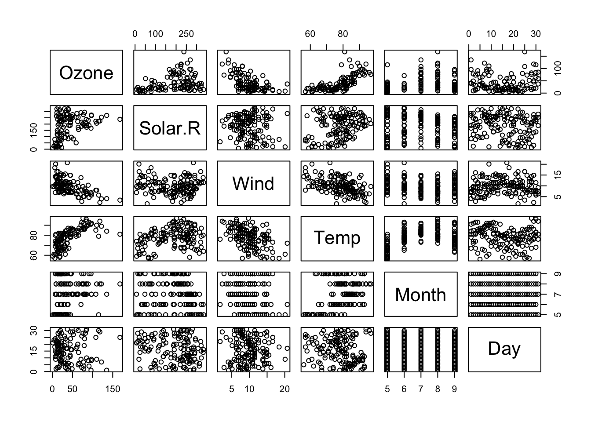

x <- 10.5 # assign a decimal value
x # print the value of x [1] 10.5Why cover R in a course focused on Python?
There are many reasons for this:
We have been studying Python as a data processing language from the perspective of data science. But R is in many ways the original data science language.
It was built from the beginning by and for data analysts, statisticians, and scientists.
Note, however, the R was not built by and for data miners, who compose a large segment of the data science community.
Python borrows many concepts from R, including the data frame.
The R community provides insights into data processing through excellent documentation and well-designed code.
Although not as popular as it once was, it is still widely used—you may find yourself on a team that prefers it.
Many of the courses in the UVA SDS programs use R.
It’s not that hard, especially once you know basic programming concepts.
A scripting language, like Python.
Designed to support statistical computing above all.
Very strong academic community.
Many domain-specific functions are built-in.
Vector-first thinking.
Everything is an object.
Syntax loosely follows traditional C-style
Braces { and } are used to form blocks.
Semi-colons are used optionally to end statements, required if on same line.
Assignments are made with <- or ->.
Dots . have no special meaning—they are not operators.
_ in Python.Single and double quotes have the same meaning, but double quotes tend to be preferred.
Use single quotes if you expect your string to contain double quotes.
Backslash escape applies to R strings, although since there are no raw strings—Python’s r" "—we often have to supply double backslashes in regular expressions.
Although there are many ways to run R programs, by far the most common is to use R Studio.
R Studio provides a fully-functional programming environment that includes an editor, a command-line, access to the file system, a help system, an installation system, etc.
R programs can be plain text files with an .r suffix, R Markdown files (.Rmd), or many other kinds of file.
OK, so let’s get into the basics—beginning with data types.
There are several basic R data types.
Floating point numbers are called “numerics” in R.
It is the default data type.
If we assign a decimal value to a variable x, x will be of numeric type:
x <- 10.5 # assign a decimal value
x # print the value of x [1] 10.5class(x) # print the class name of x [1] "numeric"Even if we assign an integer to a variable k, it is will still be saved as a numeric value.
k <- 1
k # print the value of k [1] 1class(k) # print the class name of k [1] "numeric"That k is not an integer can be confirmed with is.integer():
is.integer(k) # is k an integer?[1] FALSETo create an integer variable in R, we use as.integer().
y <- as.integer(3)
y # print the value of y [1] 3class(y) # print the class name of y [1] "integer"is.integer(y) # is y an integer? [1] TRUEWe can also declare an integer by appending an L suffix.
y <- 3L
is.integer(y) # is y an integer? [1] TRUEWe can coerce, or cast, a numeric value into an integer with as.integer().
as.integer(3.14) # coerce a numeric value [1] 3And we can parse a string for decimal values in much the same way.
as.integer("5.27") # coerce a decimal string [1] 5On the other hand, you can’t parse a non-decimal string.
as.integer("Joe") # coerce an non-decimal string Warning: NAs introduced by coercion[1] NAWe can convert booleans to numbers this way, too.
as.integer(TRUE) # the numeric value of TRUE [1] 1as.integer(FALSE) # the numeric value of FALSE [1] 0Numerics and integers are subject to the standard array of arithmetic operations.
| Operator | Description |
|---|---|
| + | addition |
| - | subtraction |
| * | multiplication |
| / | division |
| ^ or ** | exponentiation |
| x %% y | modulus (x mod y) 5%%2 is 1 |
| x %/% y | integer division 5%/%2 is 2 |
A logical value is often produced from the comparison between values.
x <- 1
y <- 2 # sample values
z <- x > y # is x larger than y?
z # print the logical value [1] FALSEclass(z) # print the class name of z [1] "logical"The standard logical operations are & (and), | (or), and ! (negation).
u <- TRUE
v <- FALSE
u & v # u AND v [1] FALSEu | v # u OR v [1] TRUE!u # negation of u [1] FALSENote that you can use T and F instead of TRUE and FALSE.
a <- T
b <- F
a & b[1] FALSEA character object is used to represent string values in R.
This may confusing if you are coming from a language where ‘character’ means an individual character, such as A.
We may convert non-character objects into characters with the as.character() function:
x <- as.character(3.14)
x[1] "3.14"class(x) # print the class name of x [1] "character"paste()Two character values can be concatenated with the paste() function.
R does not overload the + operator.
fname <- "Joe"
lname <-"Smith"
paste(fname, lname) [1] "Joe Smith"paste() takes a sep argument:
paste("A", "B", "C", sep="--")[1] "A--B--C"sprintf()It is often convenient to create a readable string with the sprintf() function, which has a C language syntax.
sprintf("%s has %d dollars", "Sam", 100) [1] "Sam has 100 dollars"substr()To extract a substring, we apply the substr() function.
Here is an example showing how to extract the substring between the third and twelfth positions in a string.
substr("Mary has a little lamb.", start=3, stop=12) [1] "ry has a l"sub()And to replace the first occurrence of the word “little” by another word “big” in the string, we apply the sub() function.
This function can use regular expressions.
sub("little", "big", "Mary has a little lamb.") [1] "Mary has a big lamb."Basic R comes with several data structures:
A vector is what is called an array in many other programming languages
A matrix is a two-dimensional vector (fixed size, all cell types the same).
An array is a vector with one or more dimensions.
So, an array with one dimension is (almost) the same as a vector.
An array with two dimensions is (almost) the same as a matrix.
An array with three or more dimensions is an n-dimensional array.
A list can hold items of different types and the list size can be increased on the fly.
List contents can be accessed either by index (like mylist[[1]]) or by name (like mylist$age).
Lists are like lists in Python.
A data frame is called a table in many languages.
This is the workhorse of R.
Each column holds the same type, and the columns can have header names.
A data frame is essential a kind of a list — a list of vectors each with the same length, but of varying data types.
The two most frequently used are Vector and Data frame.
So, we will look at vectors and data frames.
We will also look at lists since they are used internally to construct data frames.
c()A vector is a sequence of data elements of the same basic type.
Members in a vector are officially called components, but many call them members.
Vectors may be created with the c() function (“c” stands for combine).
[] in Python.Here is a vector of three numeric values 2, 3 and 5.
c(2, 3, 5) [1] 2 3 5And here is a vector of logical values.
c(TRUE, FALSE, TRUE, FALSE, FALSE) [1] TRUE FALSE TRUE FALSE FALSEA vector can contain character strings.
c("aa", "bb", "cc", "dd", "ee") [1] "aa" "bb" "cc" "dd" "ee":, seq(), and rep()Vectors can be made out of sequences which may be generated in a few ways.
s1 <- 2:5
s1[1] 2 3 4 5The seq() function is like Python’s range().
s2 <- seq(from=1, to=5, by=2)
s2[1] 1 3 5You can drop the argument names and write seq(1,5,2).
The rep() function will create a series of repeated values:
s3 <- rep(1, 5)
s3[1] 1 1 1 1 1length()The number of members in a vector is given by the length() function.
length(c("aa", "bb", "cc", "dd", "ee")) [1] 5c()Vectors can be combined via the function c().
n <- c(2, 3, 5)
s <- c("aa", "bb", "cc", "dd", "ee")
c(n, s) [1] "2" "3" "5" "aa" "bb" "cc" "dd" "ee"Notice how the numeric values are being coerced into character strings when the two vectors are combined.
This is necessary so as to maintain the same primitive data type for members in the same vector.
Arithmetic operations of vectors are performed member-by-member, i.e., member-wise.
We called this ‘element-wise’ in the context of NumPy.
For example, suppose we have two vectors a and b.
a <- c(1, 3, 5, 7)
b <- c(1, 2, 4, 8)If we multiply a by 5, we would get a vector with each of its members multiplied by 5.
5 * a [1] 5 15 25 35And if we add a and b together, the sum would be a vector whose members are the sum of the corresponding members from a and b.
a + b[1] 2 5 9 15Similarly for subtraction, multiplication and division, we get new vectors via member-wise operations.
a - b [1] 0 1 1 -1a * b [1] 1 6 20 56a / b [1] 1.000 1.500 1.250 0.875If two vectors are of unequal length, the shorter one will be recycled in order to match the longer vector.
This is similar to broadcasting in NumPy and Pandas.
For example, the following vectors u and v have different lengths, and their sum is computed by recycling values of the shorter vector u.
u <- c(10, 20, 30)
v <- c(1, 2, 3, 4, 5, 6, 7, 8, 9)
u + v [1] 11 22 33 14 25 36 17 28 39We retrieve values in a vector by declaring an index inside a single square bracket index [] operator.
Vector indexes are 1-based.
s <- c("aa", "bb", "cc", "dd", "ee")
s[3] [1] "cc"Unlike Python, if the index is negative, it will remove the member whose position has the same absolute value as the negative index.
It really does mean subtraction!
For example, the following creates a vector slice with the third member removed.
s[-3] [1] "aa" "bb" "dd" "ee"Values for out-of-range indexes are reported as NA.
s[10] [1] NAA new vector can be sliced from a given vector with a numeric vector passed to the indexing operator.
Index vectors consist of member positions of the original vector to be retrieved.
Here we see how to retrieve a vector slice containing the second and third members of a given vector s.
s <- c("aa", "bb", "cc", "dd", "ee")
s[c(2, 3)] [1] "bb" "cc"The index vector allows duplicate values. Hence the following retrieves a member twice in one operation.
s[c(2, 3, 3)] [1] "bb" "cc" "cc"The index vector can even be out-of-order. Here is a vector slice with the order of first and second members reversed.
s[c(2, 1, 3)] [1] "bb" "aa" "cc"To produce a vector slice between two indexes, we can use the colon operator “:”. This can be convenient for situations involving large vectors.
s[2:4] [1] "bb" "cc" "dd"A new vector can be sliced from a given vector with a logical index vector.
The logical vector must the same length as the original vector.
Its members are TRUE if the corresponding members in the original vector are to be included in the slice, and FALSE if otherwise.
For example, consider the following vector s of length 5.
s <- c("aa", "bb", "cc", "dd", "ee")To retrieve the the second and fourth members of s, we define a logical vector L of the same length, and have its second and fourth members set as TRUE.
L = c(FALSE, TRUE, FALSE, TRUE, FALSE)
s[L] [1] "bb" "dd"The code can be abbreviated into a single line.
s[c(FALSE, TRUE, FALSE, TRUE, FALSE)][1] "bb" "dd"names()We can assign names to vector members, too.
v <- c("Mary", "Sue")
names(v) <- c("First", "Last")
v First Last
"Mary" "Sue" Now we can retrieve the first member by name, much like a Python dictionary.
v["First"] First
"Mary" We can also reverse the order with a character string index vector.
v[c("Last", "First")] Last First
"Sue" "Mary" A list is a generic vector containing other objects.
This is close to a Python list.
The following variable x is a list containing copies of three vectors n, s, b, and a numeric value \(3\).
n <- c(2, 3, 5)
s <- c("aa", "bb", "cc", "dd", "ee")
b <- c(TRUE, FALSE, TRUE, FALSE, FALSE)
x <- list(n, s, b, 3) # x contains copies of n, s, b
x[[1]]
[1] 2 3 5
[[2]]
[1] "aa" "bb" "cc" "dd" "ee"
[[3]]
[1] TRUE FALSE TRUE FALSE FALSE
[[4]]
[1] 3Note that odd bracket notation.
It indicates that each list member contains a vector, even if the length of the vector is \(1.\)
We retrieve a list slice with the single square bracket [] operator.
The following is a slice containing the second member of x, which is a copy of s.
x[2] [[1]]
[1] "aa" "bb" "cc" "dd" "ee"With a vector, we can retrieve a slice with multiple members.
Here a slice containing the second and fourth members of x.
x[c(2, 4)] [[1]]
[1] "aa" "bb" "cc" "dd" "ee"
[[2]]
[1] 3[[]]To reference a list member directly, we use the double square bracket [[]] operator.
The following object x[[2]] is the second member of x.
In other words, x[[2]] is a true copy of s, not a slice containing s or its copy.
x[2][[1]]
[1] "aa" "bb" "cc" "dd" "ee"x[[2]][1] "aa" "bb" "cc" "dd" "ee"We can modify its content directly.
x[[2]][1] = "ta"
x[[2]] [1] "ta" "bb" "cc" "dd" "ee"And s is unaffected.
x [[1]]
[1] 2 3 5
[[2]]
[1] "ta" "bb" "cc" "dd" "ee"
[[3]]
[1] TRUE FALSE TRUE FALSE FALSE
[[4]]
[1] 3A data frame is used for storing data tables.
It is essentially a list of vectors of equal length.
For example, the following variable df is a data frame containing three vectors n, s, b.
n <- c(2, 3, 5)
s <- c("aa", "bb", "cc")
b <- c(TRUE, FALSE, TRUE)
df <- data.frame(n, s, b)
df n s b
1 2 aa TRUE
2 3 bb FALSE
3 5 cc TRUENotice that data frames are built column-wise.
When displayed, the top line of the data frame is the header; it contains the column names.
The data type is listed below the column name.
Each horizontal line afterward denotes a data row, which may begin with the name of the row, and then followed by the actual data.
Each data member of a row is called a cell.
Here is a built-in data frame in R, called mtcars.
Note that it comes with R without having to import anything.
mtcars mpg cyl disp hp drat wt qsec vs am gear carb
Mazda RX4 21.0 6 160.0 110 3.90 2.620 16.46 0 1 4 4
Mazda RX4 Wag 21.0 6 160.0 110 3.90 2.875 17.02 0 1 4 4
Datsun 710 22.8 4 108.0 93 3.85 2.320 18.61 1 1 4 1
Hornet 4 Drive 21.4 6 258.0 110 3.08 3.215 19.44 1 0 3 1
Hornet Sportabout 18.7 8 360.0 175 3.15 3.440 17.02 0 0 3 2
Valiant 18.1 6 225.0 105 2.76 3.460 20.22 1 0 3 1
Duster 360 14.3 8 360.0 245 3.21 3.570 15.84 0 0 3 4
Merc 240D 24.4 4 146.7 62 3.69 3.190 20.00 1 0 4 2
Merc 230 22.8 4 140.8 95 3.92 3.150 22.90 1 0 4 2
Merc 280 19.2 6 167.6 123 3.92 3.440 18.30 1 0 4 4
Merc 280C 17.8 6 167.6 123 3.92 3.440 18.90 1 0 4 4
Merc 450SE 16.4 8 275.8 180 3.07 4.070 17.40 0 0 3 3
Merc 450SL 17.3 8 275.8 180 3.07 3.730 17.60 0 0 3 3
Merc 450SLC 15.2 8 275.8 180 3.07 3.780 18.00 0 0 3 3
Cadillac Fleetwood 10.4 8 472.0 205 2.93 5.250 17.98 0 0 3 4
Lincoln Continental 10.4 8 460.0 215 3.00 5.424 17.82 0 0 3 4
Chrysler Imperial 14.7 8 440.0 230 3.23 5.345 17.42 0 0 3 4
Fiat 128 32.4 4 78.7 66 4.08 2.200 19.47 1 1 4 1
Honda Civic 30.4 4 75.7 52 4.93 1.615 18.52 1 1 4 2
Toyota Corolla 33.9 4 71.1 65 4.22 1.835 19.90 1 1 4 1
Toyota Corona 21.5 4 120.1 97 3.70 2.465 20.01 1 0 3 1
Dodge Challenger 15.5 8 318.0 150 2.76 3.520 16.87 0 0 3 2
AMC Javelin 15.2 8 304.0 150 3.15 3.435 17.30 0 0 3 2
Camaro Z28 13.3 8 350.0 245 3.73 3.840 15.41 0 0 3 4
Pontiac Firebird 19.2 8 400.0 175 3.08 3.845 17.05 0 0 3 2
Fiat X1-9 27.3 4 79.0 66 4.08 1.935 18.90 1 1 4 1
Porsche 914-2 26.0 4 120.3 91 4.43 2.140 16.70 0 1 5 2
Lotus Europa 30.4 4 95.1 113 3.77 1.513 16.90 1 1 5 2
Ford Pantera L 15.8 8 351.0 264 4.22 3.170 14.50 0 1 5 4
Ferrari Dino 19.7 6 145.0 175 3.62 2.770 15.50 0 1 5 6
Maserati Bora 15.0 8 301.0 335 3.54 3.570 14.60 0 1 5 8
Volvo 142E 21.4 4 121.0 109 4.11 2.780 18.60 1 1 4 2To retrieve data in a cell, we enter its row and column coordinates in the single square bracket [ ] operator.
The two coordinates are separated by a comma, e.g. [row, col].
Here is the cell value from the first row, second column of mtcars.
mtcars[1, 2] [1] 6We can use names instead of the numeric coordinates.
mtcars["Mazda RX4", "cyl"] [1] 6Lastly, the number of data rows in the data frame is given by the nrow() function.
nrow(mtcars)[1] 32And the number of columns of a data frame is given by the ncol() function.
ncol(mtcars)[1] 11We get the shape of the data frame withdim(), which stands for ‘dimension’.
dim(mtcars)[1] 32 11Further details of the mtcars data set is available in the R documentation.
help(mtcars)head()Instead of printing out the entire data frame, it is often desirable to preview it with the head function beforehand
head(mtcars) mpg cyl disp hp drat wt qsec vs am gear carb
Mazda RX4 21.0 6 160 110 3.90 2.620 16.46 0 1 4 4
Mazda RX4 Wag 21.0 6 160 110 3.90 2.875 17.02 0 1 4 4
Datsun 710 22.8 4 108 93 3.85 2.320 18.61 1 1 4 1
Hornet 4 Drive 21.4 6 258 110 3.08 3.215 19.44 1 0 3 1
Hornet Sportabout 18.7 8 360 175 3.15 3.440 17.02 0 0 3 2
Valiant 18.1 6 225 105 2.76 3.460 20.22 1 0 3 1We reference a data frame column with the double square bracket [[]] operator, just as we do for lists.
For example, to retrieve the ninth column vector of the built-in data set mtcars, we write
mtcars[[9]] [1] 1 1 1 0 0 0 0 0 0 0 0 0 0 0 0 0 0 1 1 1 0 0 0 0 0 1 1 1 1 1 1 1We can retrieve the same column vector by its name
mtcars[["am"]] [1] 1 1 1 0 0 0 0 0 0 0 0 0 0 0 0 0 0 1 1 1 0 0 0 0 0 1 1 1 1 1 1 1We can also retrieve with the $ operator in lieu of the double square bracket operator.
This is like using a dot in Pandas.
mtcars$am [1] 1 1 1 0 0 0 0 0 0 0 0 0 0 0 0 0 0 1 1 1 0 0 0 0 0 1 1 1 1 1 1 1Yet another way to retrieve the same column vector is to use the single square bracket [] operator.
We prepend the column name with a comma character, which signals a wildcard match for the row position
mtcars[, "am"] [1] 1 1 1 0 0 0 0 0 0 0 0 0 0 0 0 0 0 1 1 1 0 0 0 0 0 1 1 1 1 1 1 1We retrieve a data frame column slice with the single square bracket [ ] operator.
Note: This is like a one-column dataframe in Pandas, as opposed to a Series.
The following is a slice containing the first column of the built-in data set mtcars
mtcars[[1]] [1] 21.0 21.0 22.8 21.4 18.7 18.1 14.3 24.4 22.8 19.2 17.8 16.4 17.3 15.2 10.4
[16] 10.4 14.7 32.4 30.4 33.9 21.5 15.5 15.2 13.3 19.2 27.3 26.0 30.4 15.8 19.7
[31] 15.0 21.4mtcars[1] mpg
Mazda RX4 21.0
Mazda RX4 Wag 21.0
Datsun 710 22.8
Hornet 4 Drive 21.4
Hornet Sportabout 18.7
Valiant 18.1
Duster 360 14.3
Merc 240D 24.4
Merc 230 22.8
Merc 280 19.2
Merc 280C 17.8
Merc 450SE 16.4
Merc 450SL 17.3
Merc 450SLC 15.2
Cadillac Fleetwood 10.4
Lincoln Continental 10.4
Chrysler Imperial 14.7
Fiat 128 32.4
Honda Civic 30.4
Toyota Corolla 33.9
Toyota Corona 21.5
Dodge Challenger 15.5
AMC Javelin 15.2
Camaro Z28 13.3
Pontiac Firebird 19.2
Fiat X1-9 27.3
Porsche 914-2 26.0
Lotus Europa 30.4
Ford Pantera L 15.8
Ferrari Dino 19.7
Maserati Bora 15.0
Volvo 142E 21.4We can retrieve the same column slice by its name
mtcars["mpg"] mpg
Mazda RX4 21.0
Mazda RX4 Wag 21.0
Datsun 710 22.8
Hornet 4 Drive 21.4
Hornet Sportabout 18.7
Valiant 18.1
Duster 360 14.3
Merc 240D 24.4
Merc 230 22.8
Merc 280 19.2
Merc 280C 17.8
Merc 450SE 16.4
Merc 450SL 17.3
Merc 450SLC 15.2
Cadillac Fleetwood 10.4
Lincoln Continental 10.4
Chrysler Imperial 14.7
Fiat 128 32.4
Honda Civic 30.4
Toyota Corolla 33.9
Toyota Corona 21.5
Dodge Challenger 15.5
AMC Javelin 15.2
Camaro Z28 13.3
Pontiac Firebird 19.2
Fiat X1-9 27.3
Porsche 914-2 26.0
Lotus Europa 30.4
Ford Pantera L 15.8
Ferrari Dino 19.7
Maserati Bora 15.0
Volvo 142E 21.4Compare to accessing the column vector data directly:
mtcars[["mpg"]] [1] 21.0 21.0 22.8 21.4 18.7 18.1 14.3 24.4 22.8 19.2 17.8 16.4 17.3 15.2 10.4
[16] 10.4 14.7 32.4 30.4 33.9 21.5 15.5 15.2 13.3 19.2 27.3 26.0 30.4 15.8 19.7
[31] 15.0 21.4To retrieve a data frame slice with the two columns mpg and hp, we put the column names into a vector inside the single square bracket operator:
mtcars[c("mpg", "hp")] mpg hp
Mazda RX4 21.0 110
Mazda RX4 Wag 21.0 110
Datsun 710 22.8 93
Hornet 4 Drive 21.4 110
Hornet Sportabout 18.7 175
Valiant 18.1 105
Duster 360 14.3 245
Merc 240D 24.4 62
Merc 230 22.8 95
Merc 280 19.2 123
Merc 280C 17.8 123
Merc 450SE 16.4 180
Merc 450SL 17.3 180
Merc 450SLC 15.2 180
Cadillac Fleetwood 10.4 205
Lincoln Continental 10.4 215
Chrysler Imperial 14.7 230
Fiat 128 32.4 66
Honda Civic 30.4 52
Toyota Corolla 33.9 65
Toyota Corona 21.5 97
Dodge Challenger 15.5 150
AMC Javelin 15.2 150
Camaro Z28 13.3 245
Pontiac Firebird 19.2 175
Fiat X1-9 27.3 66
Porsche 914-2 26.0 91
Lotus Europa 30.4 113
Ford Pantera L 15.8 264
Ferrari Dino 19.7 175
Maserati Bora 15.0 335
Volvo 142E 21.4 109We retrieve rows from a data frame with the single square bracket operator, just like what we did with columns. However, in additional to an index vector of row positions, we append an extra comma character. This is important, as the extra comma signals a wildcard match for the second coordinate for column positions.
For example, the following retrieves a row record of the built-in data set mtcars. Please notice the extra comma in the square bracket operator, and it is not a typo. It states that the 1974 Camaro Z28 has a gas mileage of \(13.3\) miles per gallon, and an eight cylinder \(245\) horse power engine, …, etc
mtcars[24,] mpg cyl disp hp drat wt qsec vs am gear carb
Camaro Z28 13.3 8 350 245 3.73 3.84 15.41 0 0 3 4To retrieve more than one rows, we use a numeric index vector
mtcars[c(3, 24),] mpg cyl disp hp drat wt qsec vs am gear carb
Datsun 710 22.8 4 108 93 3.85 2.32 18.61 1 1 4 1
Camaro Z28 13.3 8 350 245 3.73 3.84 15.41 0 0 3 4We can retrieve a row by its name.
mtcars["Camaro Z28",] mpg cyl disp hp drat wt qsec vs am gear carb
Camaro Z28 13.3 8 350 245 3.73 3.84 15.41 0 0 3 4And we can pack the row names in an index vector in order to retrieve multiple rows.
mtcars[c("Datsun 710", "Camaro Z28"),] mpg cyl disp hp drat wt qsec vs am gear carb
Datsun 710 22.8 4 108 93 3.85 2.32 18.61 1 1 4 1
Camaro Z28 13.3 8 350 245 3.73 3.84 15.41 0 0 3 4Lastly, we can retrieve rows with a logical index vector. In the following vector L, the member value is TRUE if the car has automatic transmission, and FALSE if otherwise.
L <- mtcars$am == 1
L [1] TRUE TRUE TRUE FALSE FALSE FALSE FALSE FALSE FALSE FALSE FALSE FALSE
[13] FALSE FALSE FALSE FALSE FALSE TRUE TRUE TRUE FALSE FALSE FALSE FALSE
[25] FALSE TRUE TRUE TRUE TRUE TRUE TRUE TRUEHere is the list of vehicles with automatic transmission
mtcars[L,] mpg cyl disp hp drat wt qsec vs am gear carb
Mazda RX4 21.0 6 160.0 110 3.90 2.620 16.46 0 1 4 4
Mazda RX4 Wag 21.0 6 160.0 110 3.90 2.875 17.02 0 1 4 4
Datsun 710 22.8 4 108.0 93 3.85 2.320 18.61 1 1 4 1
Fiat 128 32.4 4 78.7 66 4.08 2.200 19.47 1 1 4 1
Honda Civic 30.4 4 75.7 52 4.93 1.615 18.52 1 1 4 2
Toyota Corolla 33.9 4 71.1 65 4.22 1.835 19.90 1 1 4 1
Fiat X1-9 27.3 4 79.0 66 4.08 1.935 18.90 1 1 4 1
Porsche 914-2 26.0 4 120.3 91 4.43 2.140 16.70 0 1 5 2
Lotus Europa 30.4 4 95.1 113 3.77 1.513 16.90 1 1 5 2
Ford Pantera L 15.8 8 351.0 264 4.22 3.170 14.50 0 1 5 4
Ferrari Dino 19.7 6 145.0 175 3.62 2.770 15.50 0 1 5 6
Maserati Bora 15.0 8 301.0 335 3.54 3.570 14.60 0 1 5 8
Volvo 142E 21.4 4 121.0 109 4.11 2.780 18.60 1 1 4 2And here is the gas mileage data for automatic transmission
mtcars[L,]$mpg [1] 21.0 21.0 22.8 32.4 30.4 33.9 27.3 26.0 30.4 15.8 19.7 15.0 21.4names(df)[names(df) == 'old.var.name'] <- 'new.var.name'It is often necessary to import sample textbook data into R before you start working on your homework.
Excel Files
Quite frequently, the sample data is in Excel format, and needs to be imported into R prior to use. For this, we can use the function read.xls from the gdata package. It reads from an Excel spreadsheet and returns a data frame. The following shows how to load an Excel spreadsheet named “mydata.xls”. This method requires Perl runtime to be present in the system
##library(gdata) # load gdata package
##help(read.xls) # documentation
##mydata <- read.xls("mydata.xls") # read from first sheetAlternatively, we can use the function loadWorkbook from the XLConnect package to read the entire workbook, and then load the worksheets with readWorksheet. The XLConnect package requires Java to be pre-installed
##library(XLConnect) # load XLConnect package
##wk <- loadWorkbook("mydata.xls")
##df <- readWorksheet(wk, sheet="Sheet1")Table Files
A data table can reside in a text file.
The cells inside the table are separated by blank characters.
Here is an example of a table with 4 rows and 3 columns.
100 a1 b1
200 a2 b2
300 a3 b3
400 a4 b4Now copy and paste the table above in a file named “mydata.txt” with a text editor.
Then load the data into the workspace with the function read.table
mydata <- read.table("mydata.txt") # read text file Warning in read.table("mydata.txt"): incomplete final line found by
readTableHeader on 'mydata.txt'mydata # print data frame V1 V2 V3
1 100 a1 b1
2 200 a2 b2
3 300 a3 b3
4 400 a4 b4CSV Files
The sample data can also be in comma separated values (CSV) format. Each cell inside such data file is separated by a special character, which usually is a comma, although other characters can be used as well.
The first row of the data file should contain the column names instead of the actual data. Here is a sample of the expected format.
Col1,Col2,Col3
100,a1,b1
200,a2,b2
300,a3,b3After we copy and paste the data above in a file named “mydata.csv” with a text editor, we can read the data with the function read.csv
mydata <- read.csv("mydata.csv") # read csv file Warning in read.table(file = file, header = header, sep = sep, quote = quote, :
incomplete final line found by readTableHeader on 'mydata.csv'mydata Col1 Col2 Col3
1 100 a1 b1
2 200 a2 b2
3 300 a3 b3In various European locales, as the comma character serves as the decimal point, the function read.csv2 should be used instead. For further detail of the read.csv and read.csv2 functions, please consult the R documentation
help(read.csv)Finally, the code samples above assume the data files are located in the R working directory, which can be found with the function getwd().
Note that these things can also be set using the RStudio’s GUI.
getwd() # get current working directory[1] "/Users/rca2t1/Dropbox/Courses/DS/DS5100/repo-book/notebooks/M10_RBasics"You can select a different working directory with the function setwd(), and thus avoid entering the full path of the data files
## setwd("<new path>") # set working directoryNote that the forward slash should be used as the path separator even on Windows platform
## setwd("C:/MyDoc")plot()R is know for its high-quality visualizations, and we’ll explore at these in more detail when we look at GGPlot.
For now, consider the plot() function.
Let’s plot the data from the built in data frame airquality.
airquality Ozone Solar.R Wind Temp Month Day
1 41 190 7.4 67 5 1
2 36 118 8.0 72 5 2
3 12 149 12.6 74 5 3
4 18 313 11.5 62 5 4
5 NA NA 14.3 56 5 5
6 28 NA 14.9 66 5 6
7 23 299 8.6 65 5 7
8 19 99 13.8 59 5 8
9 8 19 20.1 61 5 9
10 NA 194 8.6 69 5 10
11 7 NA 6.9 74 5 11
12 16 256 9.7 69 5 12
13 11 290 9.2 66 5 13
14 14 274 10.9 68 5 14
15 18 65 13.2 58 5 15
16 14 334 11.5 64 5 16
17 34 307 12.0 66 5 17
18 6 78 18.4 57 5 18
19 30 322 11.5 68 5 19
20 11 44 9.7 62 5 20
21 1 8 9.7 59 5 21
22 11 320 16.6 73 5 22
23 4 25 9.7 61 5 23
24 32 92 12.0 61 5 24
25 NA 66 16.6 57 5 25
26 NA 266 14.9 58 5 26
27 NA NA 8.0 57 5 27
28 23 13 12.0 67 5 28
29 45 252 14.9 81 5 29
30 115 223 5.7 79 5 30
31 37 279 7.4 76 5 31
32 NA 286 8.6 78 6 1
33 NA 287 9.7 74 6 2
34 NA 242 16.1 67 6 3
35 NA 186 9.2 84 6 4
36 NA 220 8.6 85 6 5
37 NA 264 14.3 79 6 6
38 29 127 9.7 82 6 7
39 NA 273 6.9 87 6 8
40 71 291 13.8 90 6 9
41 39 323 11.5 87 6 10
42 NA 259 10.9 93 6 11
43 NA 250 9.2 92 6 12
44 23 148 8.0 82 6 13
45 NA 332 13.8 80 6 14
46 NA 322 11.5 79 6 15
47 21 191 14.9 77 6 16
48 37 284 20.7 72 6 17
49 20 37 9.2 65 6 18
50 12 120 11.5 73 6 19
51 13 137 10.3 76 6 20
52 NA 150 6.3 77 6 21
53 NA 59 1.7 76 6 22
54 NA 91 4.6 76 6 23
55 NA 250 6.3 76 6 24
56 NA 135 8.0 75 6 25
57 NA 127 8.0 78 6 26
58 NA 47 10.3 73 6 27
59 NA 98 11.5 80 6 28
60 NA 31 14.9 77 6 29
61 NA 138 8.0 83 6 30
62 135 269 4.1 84 7 1
63 49 248 9.2 85 7 2
64 32 236 9.2 81 7 3
65 NA 101 10.9 84 7 4
66 64 175 4.6 83 7 5
67 40 314 10.9 83 7 6
68 77 276 5.1 88 7 7
69 97 267 6.3 92 7 8
70 97 272 5.7 92 7 9
71 85 175 7.4 89 7 10
72 NA 139 8.6 82 7 11
73 10 264 14.3 73 7 12
74 27 175 14.9 81 7 13
75 NA 291 14.9 91 7 14
76 7 48 14.3 80 7 15
77 48 260 6.9 81 7 16
78 35 274 10.3 82 7 17
79 61 285 6.3 84 7 18
80 79 187 5.1 87 7 19
81 63 220 11.5 85 7 20
82 16 7 6.9 74 7 21
83 NA 258 9.7 81 7 22
84 NA 295 11.5 82 7 23
85 80 294 8.6 86 7 24
86 108 223 8.0 85 7 25
87 20 81 8.6 82 7 26
88 52 82 12.0 86 7 27
89 82 213 7.4 88 7 28
90 50 275 7.4 86 7 29
91 64 253 7.4 83 7 30
92 59 254 9.2 81 7 31
93 39 83 6.9 81 8 1
94 9 24 13.8 81 8 2
95 16 77 7.4 82 8 3
96 78 NA 6.9 86 8 4
97 35 NA 7.4 85 8 5
98 66 NA 4.6 87 8 6
99 122 255 4.0 89 8 7
100 89 229 10.3 90 8 8
101 110 207 8.0 90 8 9
102 NA 222 8.6 92 8 10
103 NA 137 11.5 86 8 11
104 44 192 11.5 86 8 12
105 28 273 11.5 82 8 13
106 65 157 9.7 80 8 14
107 NA 64 11.5 79 8 15
108 22 71 10.3 77 8 16
109 59 51 6.3 79 8 17
110 23 115 7.4 76 8 18
111 31 244 10.9 78 8 19
112 44 190 10.3 78 8 20
113 21 259 15.5 77 8 21
114 9 36 14.3 72 8 22
115 NA 255 12.6 75 8 23
116 45 212 9.7 79 8 24
117 168 238 3.4 81 8 25
118 73 215 8.0 86 8 26
119 NA 153 5.7 88 8 27
120 76 203 9.7 97 8 28
121 118 225 2.3 94 8 29
122 84 237 6.3 96 8 30
123 85 188 6.3 94 8 31
124 96 167 6.9 91 9 1
125 78 197 5.1 92 9 2
126 73 183 2.8 93 9 3
127 91 189 4.6 93 9 4
128 47 95 7.4 87 9 5
129 32 92 15.5 84 9 6
130 20 252 10.9 80 9 7
131 23 220 10.3 78 9 8
132 21 230 10.9 75 9 9
133 24 259 9.7 73 9 10
134 44 236 14.9 81 9 11
135 21 259 15.5 76 9 12
136 28 238 6.3 77 9 13
137 9 24 10.9 71 9 14
138 13 112 11.5 71 9 15
139 46 237 6.9 78 9 16
140 18 224 13.8 67 9 17
141 13 27 10.3 76 9 18
142 24 238 10.3 68 9 19
143 16 201 8.0 82 9 20
144 13 238 12.6 64 9 21
145 23 14 9.2 71 9 22
146 36 139 10.3 81 9 23
147 7 49 10.3 69 9 24
148 14 20 16.6 63 9 25
149 30 193 6.9 70 9 26
150 NA 145 13.2 77 9 27
151 14 191 14.3 75 9 28
152 18 131 8.0 76 9 29
153 20 223 11.5 68 9 30plot(airquality)
plot(airquality[, c("Temp", "Wind")])
plot(airquality$Temp, type='l')
?plotHelp on topic 'plot' was found in the following packages:
Package Library
graphics /Library/Frameworks/R.framework/Versions/4.0/Resources/library
base /Library/Frameworks/R.framework/Resources/library
Using the first match ...table()This function is like .value_counts() in Pandas. It does a quick count of all the value types of a feature or combination of them.
Here we get a table of values and their counts for airquality$Temp, convert this into a data frame, and then plot the results.
temps <- table(airquality$Temp)
temps
56 57 58 59 61 62 63 64 65 66 67 68 69 70 71 72 73 74 75 76 77 78 79 80 81 82
1 3 2 2 3 2 1 2 2 3 4 4 3 1 3 3 5 4 4 9 7 6 6 5 11 9
83 84 85 86 87 88 89 90 91 92 93 94 96 97
4 5 5 7 5 3 2 3 2 5 3 2 1 1 temps.df <- data.frame(temps)
temps.df Var1 Freq
1 56 1
2 57 3
3 58 2
4 59 2
5 61 3
6 62 2
7 63 1
8 64 2
9 65 2
10 66 3
11 67 4
12 68 4
13 69 3
14 70 1
15 71 3
16 72 3
17 73 5
18 74 4
19 75 4
20 76 9
21 77 7
22 78 6
23 79 6
24 80 5
25 81 11
26 82 9
27 83 4
28 84 5
29 85 5
30 86 7
31 87 5
32 88 3
33 89 2
34 90 3
35 91 2
36 92 5
37 93 3
38 94 2
39 96 1
40 97 1plot(temps.df, xlab="Temp", type="b")
Packages need to be installed once.
## install.packages("tm") You can also install thing using the Package window.
Once they are installed, you import them with the library() function:
library(tm)Loading required package: NLPNote that the library name is quoted in when installing, but not when using library.